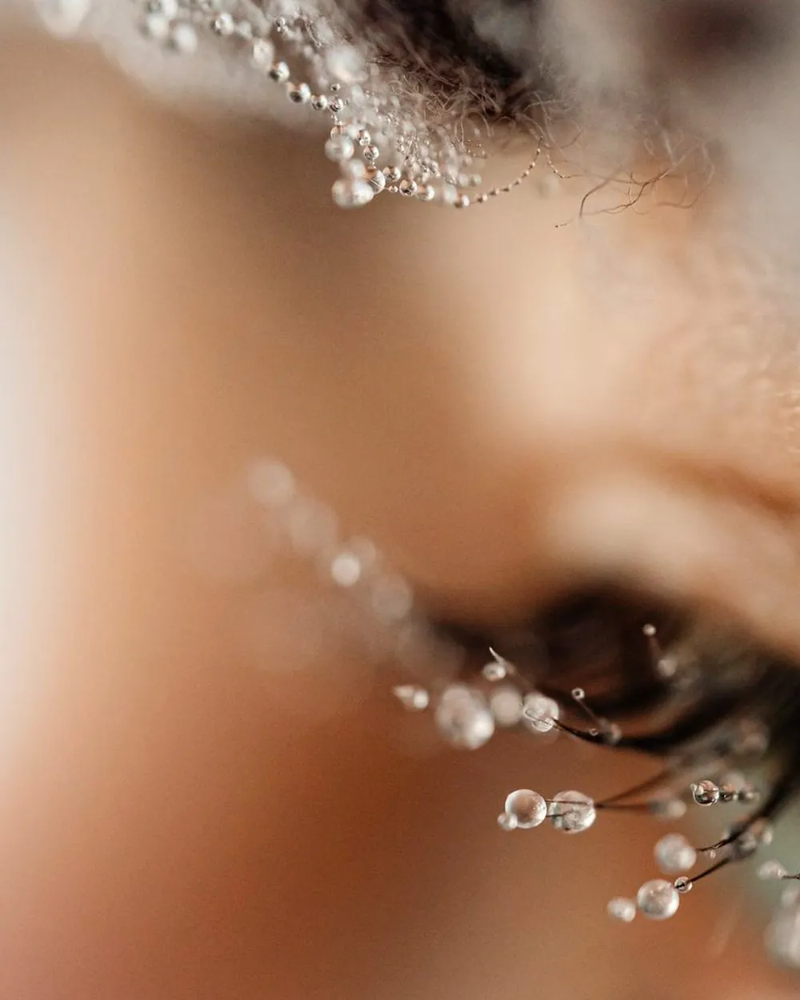

Yanchep · new clients welcome
Book your infill
Choose your lash style and how long it has been. Sets from other salons are welcome.

Lash refills · Yanchep WA
Lash infills in a private Yanchep studio, for classic, hybrid, volume and mega volume sets. Infills are from $60 and take around an hour. Sets applied at another salon are welcome.
Prices
Infill, refill and fill all mean the same appointment. The price depends on your lash style and how long it has been since your last visit.
| Classic | Hybrid | Volume | Mega Volume | |
|---|---|---|---|---|
| Two week infill | $60 | $70 | $80 | $90 |
| Three week infill | $75 | $90 | $100 | $115 |
| Foreign infill | $85 | $100 | $115 | $130 |
The same prices are on the full menu. A $50 deposit confirms your booking and comes off the total.
Which one to book
You were last in within the past two weeks. Most of the set is still there, so it is a light top-up and the lowest price.
Within three weeks. More has grown out and there is more to rebuild, so it costs a little more.
Your set was applied by another technician. Includes a tidy-up of the existing work before anything new goes on.
An infill needs roughly 40% of the extensions still in place. With less than that, and usually anywhere beyond three weeks, there is not enough of the set left to build on and a new full set is the honest answer. Why sets thin the way they do is explained in how long lash extensions last.
New to the studio
Technicians move, stop taking clients or go on leave, and a set does not wait. If you are wearing extensions from somewhere else, you do not have to start again.
Book a foreign lash refill in the style you are wearing. At the appointment the existing set is checked first. If the extensions are properly separated and sitting well, they are tidied and filled, and you leave with a full set.
If lashes have been glued together, or the extensions are too heavy for your natural lashes, you will be told that plainly. Building on top of a set like that damages the lashes underneath, so the right fix is to remove it and start a new one. Removal is $25 as an add-on.
Not sure what style you are wearing? Send a photo before you book and you will be told which one to choose.
What happens
No eye makeup and no oily skincare around the eyes. Wash your lashes that morning with a lash-safe cleanser.
Grown-out extensions that have twisted or are hanging on to a lash about to shed are removed, so the new ones sit cleanly.
New extensions go on to the natural lashes that have grown in since last time, one lash at a time, matched to the rest of the set.
Two to three weeks later. Booking before you leave keeps you on a refill price rather than a full set. Aftercare does the rest.
Questions
At Luxe Beauty Yanchep a classic infill is $60 within two weeks and $75 within three. Hybrid infills are $70 and $90, volume $80 and $100, and mega volume $90 and $115.
Nothing. Infill, refill and fill all mean the same appointment: the grown-out and missing extensions are replaced so the set looks full again. The studio's menu calls them refills.
Yes. It is booked as a foreign lash refill, which costs a little more because it includes a tidy-up of the existing work. If the set has lashes glued together it is removed and started fresh instead.
Around an hour. A foreign infill can take a little longer because the existing set is tidied first.
Every two to three weeks. Two weeks keeps the set looking full the whole time; three weeks is fine if you do not mind it looking lighter towards the end.
Usually not. An infill needs roughly 40% of the extensions still in place, and beyond three weeks there is rarely enough left, so it is booked as a new full set.
Arrive with clean lashes and no eye makeup, and wash your lashes that morning. Clean lashes hold the new extensions better and the appointment goes faster.
Nearby
The studio is a private home studio in Yanchep, WA 6035, with one client booked at a time, so an infill starts when it says it does. Clients come from Yanchep and from Two Rocks, Eglinton, Alkimos and Butler. All areas served.
Yanchep · new clients welcome
Choose your lash style and how long it has been. Sets from other salons are welcome.